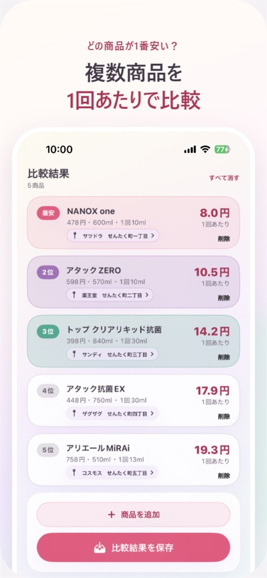
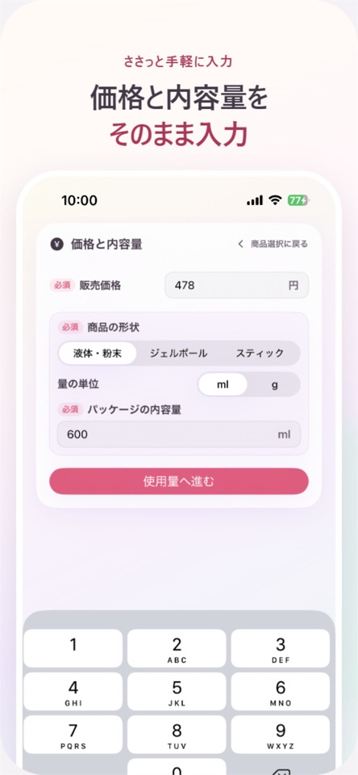
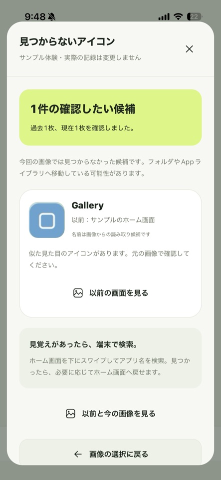
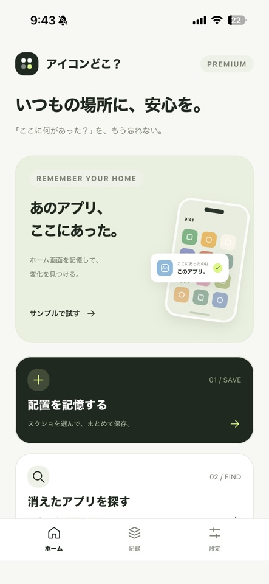

LIFESTYLE · iPhone
せんたくコスパ
洗剤・柔軟剤を、洗濯1回の価格で比較。
価格や内容量だけでは分かりにくい本当のコスパを、1回の使用量まで含めて計算。お店で迷ったその場で、どちらがお得か比べられます。
- 洗濯1回あたりの価格を自動計算
- 購入価格・お店・使い心地を記録
- 広告なし・アカウント登録なし


MADE FOR EVERYDAY LIFE
自分でも使いたいと思える道具を、企画・デザイン・開発しています。
公開中のアプリを見るAVAILABLE NOW
App Storeで無料からお試しいただけます。
LIFESTYLE · iPhone
洗剤・柔軟剤を、洗濯1回の価格で比較。
価格や内容量だけでは分かりにくい本当のコスパを、1回の使用量まで含めて計算。お店で迷ったその場で、どちらがお得か比べられます。


UTILITIES · iPhone / iPad
ホーム画面の記録
以前と今のホーム画面を比べて、見つからないアプリアイコンの候補を探します。「ここに何があった？」を、もう忘れないための記録アプリです。


ABOUT
日常で感じた「少し不便」を起点に、迷わず使えて、必要な情報がきちんと残るアプリを個人でつくっています。
App Storeで開発者ページを見る